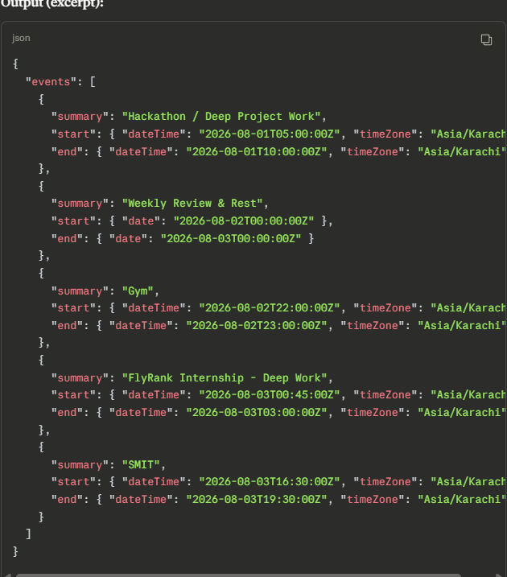
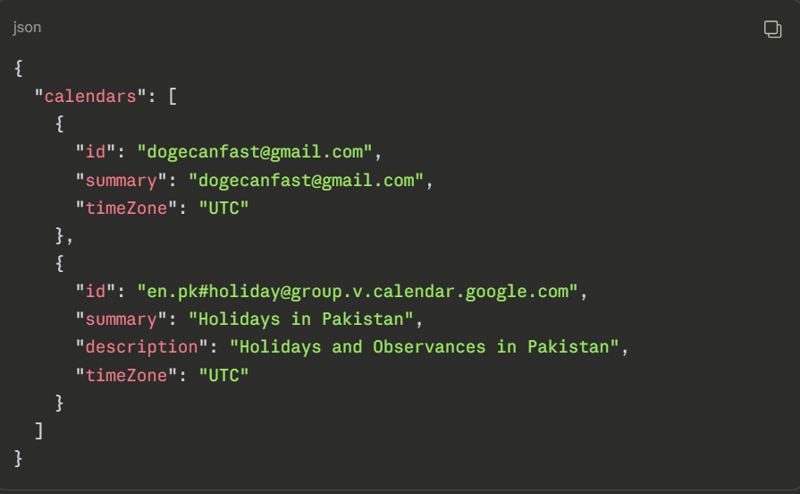
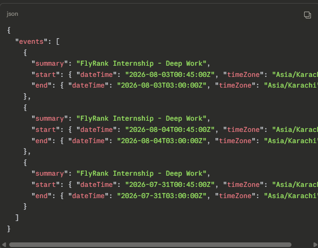

Case 04 · Workflows, agents, and MCP
Reading three sources by hand every week (Hacker News, r/MachineLearning, Simon Willison's blog), picking the ~10 stories worth knowing, and writing a one-line "why it matters" for each takes roughly 25–35 minutes — the kind of repetitive gathering work a pipeline should do instead.
A 4-stage n8n pipeline: Gather (3 RSS feeds merged and trimmed) → Synthesize (Groq API dedupes near-identical stories, ranks by relevance, discards low-signal items) → Draft (Groq API formats the ranked list into a fixed markdown brief) → Format/Output (produces a downloadable .md file).

Not the n8n graph itself — a live MCP tool call result, shown below with the rest of the MCP demo.
All 5 outputs are real Groq API responses, logged with timestamps and durations, not fabricated:
Honest note: runs 2–5 happened within roughly a 10-minute debugging window, so their content overlaps heavily — a real weekly cadence would show more variation. Break-even on the ~3.5 hour build cost lands around 7–8 runs, roughly 2 months at weekly cadence.
n8n's built-in Aggregate node silently returned an empty result with no error thrown — a green checkmark that didn't mean the data was actually there. Fixed by replacing it with a small Code node that explicitly builds the array. Separately, writing the output file to a Docker-mounted Windows path failed with a permissions error, since the container can't see a host path unless it's explicitly volume-mounted — worked around by ending the pipeline at file-generation and downloading manually.
Every node in this pipeline has exactly one fixed successor. Synthesize always feeds Draft, regardless of what Synthesize actually returned — during the Aggregate-node bug, Groq correctly (but uselessly) returned an empty array, and the pipeline marched forward into Draft anyway rather than noticing and adapting. That's the definition that matters: an agent decides its own next action based on what it just observed; a workflow executes a sequence a human fixed in advance. This one calls AI twice, but control flow is still hard-coded by me — so it's a workflow with AI steps in it, not an agent.
The concrete upgrade that would make it one: after Synthesize, add a decision point that checks whether all 3 sources are actually represented in the ranked output. All 5 real runs above returned 100% r/MachineLearning content despite pulling from 3 feeds — the pipeline never noticed. An agent version would judge that result and decide on its own to re-query a silent source, widen the RSS query, or flag the run for review, instead of blindly continuing.
MCP (Model Context Protocol) is a standard way for an AI system to connect to external tools and data — one common connector shape any compliant client can plug into any compliant server, instead of custom glue code per integration. It defines three primitives: tools (functions the AI can call to do something), resources (data it can read), and prompts (pre-written templates a server can expose).
To demonstrate it live, I connected Claude to my actual Google Calendar and ran three real tool calls — not something a chat model could fabricate, since it has no access to my account on its own:

list_calendars — real calendar IDs, not guessable
list_events — real upcoming events pulled live

search_events — searched for "FlyRank," returned matching real instances
Periodically confirm all 3 sources are actually contributing (not just present as nodes), skim the "why it matters" lines for accuracy since AI dedupe can over- or under-merge, and click through before repeating any headline as fact — the pipeline never verifies the linked page itself.